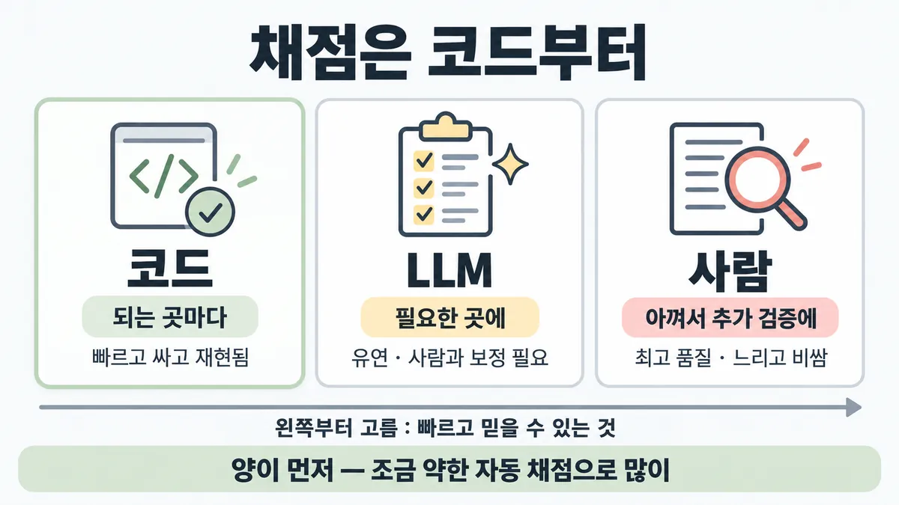
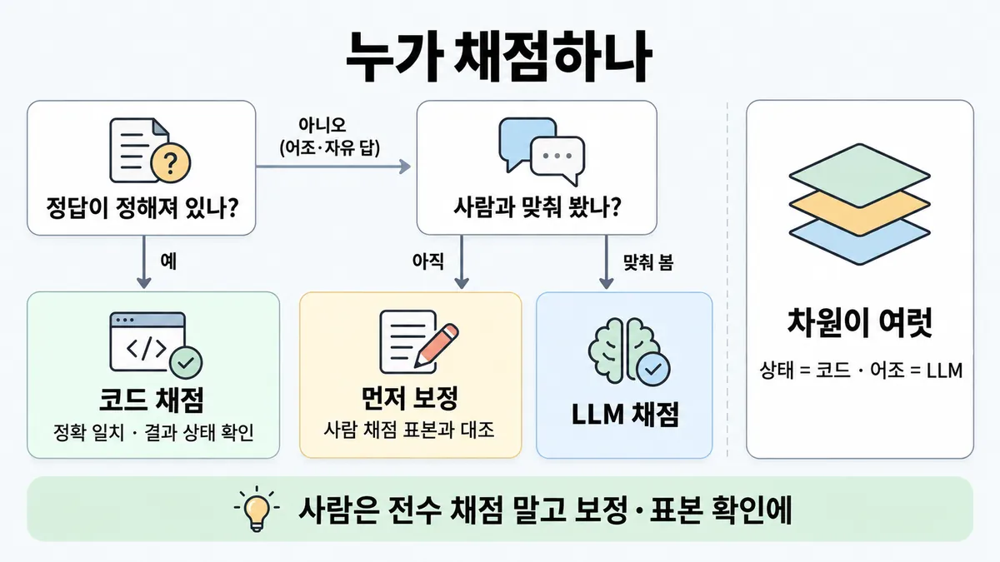
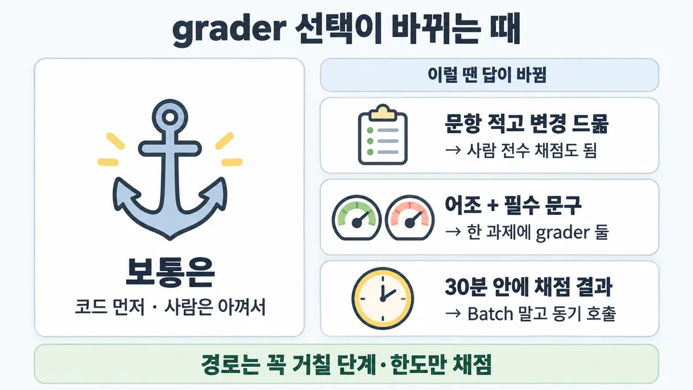

■ grader 고르기
표시가 없는 문장은 공식 문서에서 확인한 내용이에요. 다른 표시는 읽는 법
왜 배우나 — 시험이 요구하는 것
시험 목표 4.2 평가 데이터·테스트 설계 · D4 평가 16%Design evaluation datasets and test frameworks using mixed methodologies
이 개념으로 푸는 판단 (할 수 있어야 하는 것)
- 4.2① 답 10,000개, 누가 채점할까? — 채점 방법 고르기 (코드 → LLM(검증 후) → 사람)
한눈에
eval 답을 누가 채점하나를 고른다. 채점하는 쪽은 코드, LLM, 사람 셋이다. 가장 빠르고 믿을 수 있고 규모를 키울 수 있는 방법부터 고른다
순서는 이렇다
- 코드는 되는 곳마다 쓴다
- LLM 은 필요한 곳에 쓴다(또는 유연성을 더할 때 쓴다)
- 사람은 아껴서 추가 검증에 쓴다
비유 모니터링 3단과 같다. 헬스체크가 코드다. 이상 탐지 모델이 LLM 이다(사람 라벨로 먼저 맞춘다). 온콜 수동 확인이 사람이다(표본만 본다)


ELI5
반 친구들 시험지를 누가 채점할지 고르는 거예요.
- 답이 숫자 하나면 기계가 순식간에 채점해요.
- 글짓기는 기계가 못 하니 채점 도우미에게 맡겨요.
- 도우미는 먼저 선생님이 채점한 몇 장과 점수가 맞는지 봐요.
- 선생님이 전부 채점하면 너무 오래 걸려요. 선생님은 도우미를 맞춰 보는 데 써요.
개념 설명
원리
세 grader(채점기)가 얻는 것과 잃는 것
- 코드 : 빠르고 싸고 재현된다. 대신 정답과 모양이 조금만 달라도 떨어뜨린다(brittle). 맞는 다른 표현을 틀림으로 센다.
- LLM : 자유 답·어조·공감을 잰다. 대신 비결정적이고 코드보다 비싸다. 사람과 맞춰 보기 전에는 믿을 근거가 없다.
- 사람 : 품질이 가장 높다(gold standard). 대신 느리고 비싸다. 전문가를 늘리기도 어렵다.
왜 "빠른 것부터"인가
- eval 은 한 번 돌리고 끝나지 않는다. 프롬프트나 모델을 바꿀 때마다 다시 돌린다. 그래서 채점 속도가 곧 개선 속도다.
- 공식 원칙은 "양이 먼저"다. 신호가 조금 약해도 자동 채점으로 많이 채점하는 것이 사람 손 채점으로 조금 채점하는 것보다 낫다.
- 그래서 사람의 자리는 "답 채점"이 아니다. "grader 맞추기"와 "사람 합의가 기준인 주관적 판단"이 사람의 자리다.
무엇을 채점하나
- 채점 대상은 transcript(과정 기록) 또는 outcome(환경의 최종 상태)이다. 에이전트의 말("예약했어요")보다 최종 상태(DB 의 예약)가 증거다.
- 에이전트는 설계자가 못 떠올린 맞는 길로도 간다. 그래서 과정(정해진 순서)을 채점하면 딱딱하다. 만든 것을 채점한다. 여러 부분이면 부분 점수를 준다.
핵심 질문 두 개
- 이 답에 정답이 하나로 정해져 있나(코드로 확인되나)?
- 판단이 필요하다면, 그 판단을 사람과 맞춰 봤나?
규칙과 판단


갈림길
①②③ 답 모양으로 [4.2①]
코드 채점
정확 일치, 문자열 일치, 결과 상태 확인으로 채점한다. 빠르고 싸고 재현된다
먼저 맞춰 본다
사람 채점 표본과 먼저 맞춰 본다
LLM 채점
먼저 신뢰성을 확인한다. 그다음 규모를 키운다
④ 사람의 자리 [4.2①]
가능하면 피한다
변경마다 다시 돌리면 사람이 병목이 된다. 사람 채점은 느리고 비싸다
여기가 사람의 자리다
사람은 grader(채점기)를 맞춰 보는 자리다
체계적 사람 평가
사람 합의가 기준인 주관적 출력에 아껴 쓴다
⑤ 볼 게 여럿 [4.2①]
grader 를 섞는다
상태는 코드가 본다. 어조는 LLM rubric 이 본다. 점수는 가중 · 전부 통과 · 혼합 중 하나로 합친다
결과를 채점한다
경로 말고 만든 것을 채점한다
최종 상태를 확인한다
말이 아니라 DB 에 예약이 있는지 본다
흐름
그림 속 이름·금액·시간·토큰 수는 예시예요. 공식 한도·동작은 카드 본문 값이 기준.
장면 글로 보기
칸 : 답 → 코드 채점 → LLM 채점 → 사람
규칙 (코드 채점) : 정답이 하나로 정해질 때 쓴다. 빠르고 싸고 재현된다
규칙 (사람) : grader 를 맞춰 보는 자리다
질문 : 이 답은 누가 채점할까?
① 정답이 하나면 코드 ✓
- 시작 : 답 — 쪽지 : 질문 : 주문 #4821 상태? / 답 : "배송 중"
- 채점 : 답 → 코드 채점 : 정확 일치로 채점한다 — 쪽지 :
output == golden_answer/ "배송 중" == "배송 중" / → 통과 - 끝 : 정답이 하나면 코드가 채점한다. 빠르고 싸고 재현된다
② 어조는 맞춰 본 LLM ✓
- 시작 : 답 — 말 : “아쉽지만 기한이 지나 환불은 어려워요. 교환은 돼요.”
- 보정 : 사람 → LLM 채점 : 사람 채점 표본과 먼저 맞춰 본다 — 쪽지 : 사람 표본 200건 / 사람 ↔ LLM 판정 대조
- 채점 : 답 → LLM 채점 : 판단이 필요한 답이다 — 쪽지 : rubric : 공감 · 대안 제시 / 점수 : 4/5
- 끝 : 사람과 먼저 맞춰 신뢰성을 확인한다. 그다음 LLM 으로 규모를 키운다
③ 중요하니 사람이 전부 ≠
- 시작 : 답 — 쪽지 : 환불 거절 답 3,000건 / 변경마다 다시
- 건너뜀 : LLM 채점
- 채점 : 답 → 사람 : 모든 답을 사람이 본다 — 쪽지 : 3,000건 × 40초(가정) / ≈ 33시간
- 타이머 : 사람 : 느리고 비싸다
- 끝 : 변경마다 수천 건을 다시 돌리면 사람이 병목이 된다
나머지 규칙
-
대량 채점 비용 : 수천 건 테스트는 Batch API 용도다(50% 할인, 대부분 1시간 안, 최대 24시간) [4.2①]
자세한 것은 ◆ Batch API vs 동기 호출 에 있다. 변경마다 다시 돌리기는 ■ 변경마다 eval 다시 에 있다
규칙 원문 ①②③④⑤ (갈림길로 그린 규칙)
-
순서 : 가장 빠르고, 믿을 수 있고, 규모를 키울 수 있는 방법부터 고른다 [4.2①]
- 코드는 되는 곳마다 쓴다
- LLM 은 필요한 곳에 쓴다
- 사람은 아껴서 추가 검증에 쓴다
grader 방법 예 강점 약점 코드 정확·문자열·regex 일치 · 테스트 통과 · 정적 분석 · 결과 상태 확인 · 도구 호출 확인 빠르고 싸고 재현된다 · 객관적이다 표현만 다른 맞는 답도 틀림 처리한다(brittle) · 뉘앙스가 없다 LLM rubric 채점 · 자연어 assertion · 쌍 비교 · 참조 답 비교 · 여러 judge 합의 유연하다 · 규모를 키울 수 있다 · 자유 답도 채점한다 비결정적이다 · 코드보다 비싸다 · 사람과 맞춰 봐야 한다 사람 전문가 검토 · 표본 확인(spot-check) · 채점자 간 일치 품질이 가장 높다(gold standard) · LLM-as-judge(LLM 채점기)를 맞춰 보는 데 쓴다 비싸다 · 느리다 · 전문가를 늘리기 어렵다 -
코드 채점 : 정답이 하나로 정해질 때 쓴다. 정확 일치
output == golden_answer와 문자열 일치key_phrase in output가 있다 [4.2①]너무 엄격한 채점은 피한다. 형식·구두점·다른 표현 때문에 맞는 답도 떨어뜨린다. 예를 들어 "96.124991…" 를 기대하면 "96.12" 를 틀림 처리한다
-
LLM 채점 : 어조·공감·지시 따르기처럼 판단이 필요한 답에 쓴다. 먼저 신뢰성을 확인하고, 그다음 규모를 키운다. 자세한 것은 ■ LLM-as-judge 설계 에 있다 [4.2①]
-
사람 채점 : 가장 유연하고 품질이 높다. 그러나 느리고 비싸다. 가능하면 피한다 [4.2①]
사람은 grader 를 맞춰 보는 자리다. 체계적 사람 평가는 두 곳에 아껴 쓴다. 하나는 LLM-as-judge 를 맞춰 보는 일이다. 다른 하나는 사람 합의가 기준인 주관적 출력이다
양이 먼저다. 신호가 조금 약한 자동 채점으로 많이 채점하는 것이 사람 손 채점으로 조금 채점하는 것보다 낫다
변경마다 다시 돌리면 사람이 병목이 된다
그래도 사람 테스트는 자동 eval 이 놓치는 엣지 케이스를 찾는다. 수동 테스트는 여전히 필요하다 (리서치 글)
-
grader 조합 : 한 과제에 grader 를 여러 개 쓴다. 점수는 셋 중 하나로 합친다 [4.2①]
- 가중 : 합이 임계값을 넘는지 본다
- 전부 통과 : 이진으로 본다
- 혼합
대화형 예는 이렇다. 티켓 해결은 상태 확인으로 본다. 10턴 안에 끝났는지는 transcript 제약으로 본다. 어조는 LLM rubric 으로 본다
채점 대상은 transcript 또는 outcome(환경의 최종 상태)이다. 말이 아니라 DB 에 예약이 있는지 본다
경로 말고 만든 것을 채점한다. 정해진 도구 호출 순서를 검사하면 너무 딱딱하다. 맞는 다른 경로도 틀림 처리한다. 여러 부분이면 부분 점수를 준다
Skilljar 는 형식·문법을 코드로 채점하고, 과제 따르기를 모델로 채점한다. 그리고 두 점수를 평균한다(가중치는 조정한다) (Skilljar)
더 깊이 : 판단 규칙 · 상황 변수 (설명)
판단 규칙
| 조건 | 답 | 근거 |
|---|---|---|
| grader 를 고른다 | 가장 빠르고, 믿을 수 있고, 규모를 키울 수 있는 방법을 고른다 | develop-tests "choose the fastest, most reliable, most scalable method" |
| 코드로 확인되는 답이다 | 코드로 채점한다(정확 일치·문자열 일치) | develop-tests · demystifying-evals "deterministic graders where possible" |
| 판단이 필요한 답이다 | LLM 으로 채점한다. 먼저 신뢰성을 확인하고 그다음 규모를 키운다 | develop-tests "Test to ensure reliability first then scale." |
| 사람이 전부 채점할지 묻는다 | 가능하면 피한다 | develop-tests "Avoid if possible." |
| 사람을 어디에 쓸지 묻는다 | LLM-as-judge(LLM 채점기)를 맞춰 보는 데 쓴다. 사람 합의가 기준인 주관적 출력에 쓴다 | demystifying-evals "Reserve systematic human studies for calibrating LLM graders or evaluating subjective outputs…" |
| 문항 수와 채점 품질 중 하나를 고른다 | 자동 채점으로 문항을 많이 둔다 | develop-tests "Prioritize volume over quality" |
| 한 과제에 볼 게 여럿이다 | grader 를 섞는다. 점수는 가중 · 전부 통과 · 혼합으로 합친다 | demystifying-evals |
| 에이전트 경로를 채점하고 싶다 | 경로 말고 만든 것을 채점한다. 부분 점수를 준다 | demystifying-evals |
| 대화형 지원 Agent 다 | 상태 확인, 턴 수 제약, 어조 LLM rubric 을 함께 쓴다 | demystifying-evals |
| 수천 건을 채점하고, 급하지 않다 | Batch API 를 쓴다(50% 할인) | batch-processing |
상황 변수
| 변수 | 값 | 답 쪽 | 등급 | 근거 |
|---|---|---|---|---|
| 답 모양 | 범주 하나 · 숫자 · 형식(JSON 문법)이다 | 코드 | develop-tests · Skilljar 287737 | |
| 답 모양 | 자유 글 · 어조 · 공감이다 | LLM | define-success-full(어조 = LLM Likert) | |
| 답 모양 | 사실 질문 한 개("3분기 매출")와 긴 종합이다 | 사실은 정확 일치로, 종합은 LLM 으로 채점한다 | demystifying-evals | |
| 답의 변형 | 맞는 표현이 여럿이다 | 코드는 느슨하게 쓴다. 아니면 LLM 을 쓴다 | writing-tools-for-agents · demystifying-evals | |
| 변경 빈도 | 변경마다 다시 돌린다 | 자동(코드·LLM)으로 채점한다. 사람은 표본만 본다 | develop-tests | |
| 문항 수 | 아주 적고 변경이 드물다 | 사람도 될 수 있다. 뒤집히는 때 1 에 있다 | 계산 | 뒤집히는 때 1 |
| 분야 | 법률 · 금융 · 의료다 | 체계적 연구에는 사람 전문가가 필요하다 | demystifying-evals | |
| 마감 | 결과가 30분 안에 필요하다 | 동기 호출을 쓴다(rate limit(속도 제한) 안에서) | 계산 | 뒤집히는 때 3 |
| 마감 | 다음 날 아침까지다 | Batch API | batch-processing | |
| 채점 대상 | 에이전트의 완료 문장이다 | 최종 상태로 바꿔 채점한다 | demystifying-evals |
연습 문제
고객지원 Agent 의 환불 거절 답 3,000건이 공손한지어조를 변경마다 채점하려 한다. "어조는 주관적이고 중요하니 사람이 전부 보자" 는 의견이 있다. 사람이 채점한 표본 200건과 LLM 채점을 이미 맞춰 봤다맞춰 봄. 어떻게 채점할까?
시험 대비
함정
- "어조는 주관적이고 위험이 크니 사람이 전부 채점한다" 는 함정이다. 사람 채점은 가능하면 피한다. 사람은 맞춰 보기와 표본 확인에 쓴다 (영상 Part 9 주장)
- 공손함을 승인 문구 목록과 정확 일치로 채점하는 것은 함정이다. 표현만 다른 맞는 답도 틀림 처리한다. 어조는 문자열로 재지 못한다
- 재기 쉬운 필드만 채점하고 요구된 차원(어조)을 빼는 것은 함정이다. 요구사항이 빠진다 업계 일반
- LLM 채점을 맞춰 보지 않고 바로 전체에 돌리는 것은 함정이다. 먼저 신뢰성을 확인한다
- 정해진 도구 호출 순서를 채점하는 것은 함정이다. 너무 딱딱하다. 경로 말고 만든 것을 채점한다
- 에이전트의 "완료했어요" 문장으로 성공을 판정하는 것은 함정이다. 최종 상태를 확인한다
- "사람 채점 보기는 늘 오답이다" 는 함정이다. 체계적 사람 평가는 공식 자리가 있다. 맞춰 보기와 사람 합의가 기준인 주관적 출력이 그 자리다
신호
"When deciding which method to use to grade evals, choose the fastest, most reliable, most scalable method"
"Human grading: Most flexible and high quality, but slow and expensive. Avoid if possible."
"LLM-based grading: Fast and flexible, scalable and suitable for complex judgment. Test to ensure reliability first then scale."
"More questions with slightly lower signal automated grading is better than fewer questions with high-quality human hand-graded evals."
"We recommend choosing deterministic graders where possible, LLM graders where necessary or for additional flexibility, and using human graders judiciously for additional validation."
"it’s often better to grade what the agent produced, not the path it took."
"Reserve systematic human studies for calibrating LLM graders or evaluating subjective outputs where human consensus serves as the reference standard."


더 깊이 : 뒤집히는 때 · 오답 재료 (설명)
뒤집히는 때
1. 사람 전수 채점이 되는 때
- 조건 : 문항이 아주 적고 변경이 드물다. 예를 들어 분기마다 한 번 바꾸는 법률 문서 요약 45건이다.
- 계산 : 건당 40초(가정)면 45건은 30분이다. 그러면 사람이 해도 마감 안에 끝난다. 같은 속도로 변경마다 3,000건이면 약 33시간이다. 그러면 할 수 없다.
- 전제 : 건당 40초는 가정값이다(공식 숫자 없음, 미해결 2). 한 사람 기준이다.
- 등급 : 계산 (속도는 가정). 공식은 여전히 "가능하면 피한다"이다. 그러나 법률·금융·의료처럼 사람 전문가 합의가 기준인 분야는 체계적 사람 평가의 공식 자리다. 지문이 아래 세 가지를 모두 말하면 사람 쪽이 설 자리가 있다.
- 문항이 적다
- 변경이 드물다
- 전문가 합의가 기준이다
- 근거 : develop-tests · demystifying-evals
2. 어조인데 코드가 일부 맡는 때
- 조건 : "환불 거절 답이 공손한가" 와 "답에 정책 번호가 들어가는가" 를 함께 본다.
- 판단 : 어조는 LLM rubric 으로 본다. 정책 번호 포함은 문자열 일치(
key_phrase in output)로 충분하다. 그래서 한 과제에 grader 를 둘 쓴다. 전부 LLM 에 맡기면 비싸고 비결정적인 곳이 늘어난다. - 등급 : (grader 조합 · 문자열 일치) · 업계 일반 (어느 쪽을 코드로 뗄지)
- 근거 : develop-tests · demystifying-evals
3. 30분 마감인데 Batch API?
- 조건 : 변경마다 3,000건을 LLM 으로 채점한다. 결과가 30분 안에 필요하다.
- 계산 : Haiku 4.5 로 건당 입력 1,500 · 출력 300 토큰이면 동기 = 3,000 × (1,500 × $1 + 300 × $5) / 1M = $9.00 이다. 배치 = $4.50 이다. 배치는 대부분 1시간 안에 끝나지만 최대 24시간이 걸린다. 그래서 30분 마감을 보장하지 못한다.
- 전제 : 가격은 2026-09-28 조회값이다(ko-pricing). 캐시는 없다고 본다. rate limit 은 뺀다.
- 등급 : 계산 (가격·완료 시간 문장은 확인). 마감이 엄격하면 동기 호출을 쓴다. 하룻밤이면 배치를 쓴다. $4.50 차이보다 마감이 먼저다.
- 근거 : ko-pricing · batch-processing. 자세한 것은 ◆ Batch API vs 동기 호출 에 있다
4. 경로를 채점해도 되는 때
- 조건 : 환불 전에 반드시 신원 확인을 거쳐야 한다. 환불액에는 한도가 있다.
- 판단 : 공식 대화형 예시도
tool_calls로 확인한다.verify_identity를 호출했는지,process_refund금액이 ≤100 인지 본다. 반드시 거칠 단계와 한도는 확인한다. 그러나 전체 순서를 한 줄로 고정하지는 않는다. - 등급 : (예시) · 업계 일반 (어디까지가 "반드시")
- 근거 : demystifying-evals · writing-tools-for-agents "avoid overspecifying"
오답 재료
| 오답 | 왜 끌리나 | 왜 틀리나 | 등급 | 근거 |
|---|---|---|---|---|
| "어조는 주관적이고 위험이 크니 사람이 전부 채점" | 운영 감각으로는 "중요하면 사람이 본다" 가 맞아 보인다. 영상 Part 9 도 이렇게 주장한다 | 사람 채점은 가능하면 피한다. 변경마다 수천 건이면 사람이 병목이 된다. 사람은 맞춰 보기와 표본 확인에 쓴다 | develop-tests | |
| "승인된 공손 문구 목록과 정확 일치" | 빠르고 객관적이다 | 표현만 다른 맞는 답도 틀림 처리한다(brittle). 새 표현의 공손한 답은 떨어진다. 문구만 넣은 무례한 답은 붙는다 | demystifying-evals | |
| "어조는 빼고 코드로 되는 필드만 채점" | 채점이 쉬워진다 | 요구된 차원이 빠진다 | 업계 일반 | — |
| "LLM 채점을 바로 전체에 돌림" | 빠르고 싸 보인다 | 먼저 신뢰성을 확인한다. 그다음 규모를 키운다 | develop-tests | |
| "정해진 도구 호출 순서대로 했는지 채점" | 꼼꼼해 보인다 | 너무 딱딱하다. 맞는 다른 경로도 틀림 처리한다 | demystifying-evals | |
| "에이전트가 '완료했어요'라고 하면 성공" | 답 문장이 분명하다 | outcome 은 환경의 최종 상태다 | demystifying-evals | |
| "문항은 적게, 사람이 꼼꼼히 채점하는 게 더 좋다" | 품질이 높아 보인다 | 공식은 양이 먼저다 | develop-tests | |
| "사람 채점 보기는 늘 오답" | 공식 "Avoid if possible" 을 너무 넓게 외웠다 | 맞춰 보기와 사람 합의가 기준인 주관적 출력에는 공식 자리가 있다 | demystifying-evals |
참고
더 깊이 : 출처 · 상태 · 미해결 (참고)
출처
- 가이드 목표 4.2 공식 시험 가이드 v1.0
- docs develop-tests
- demystifying-evals
- writing-tools-for-agents
- multi-agent-research-system
- batch-processing
- Skilljar API 287742
- 287737
상태
- 업계 일반 1줄(함정 3)
미해결
- 목록 4.2① 의 순서는 "코드, LLM(검증 후), 사람" 이다. develop-tests 의 번호는 코드 1 · 사람 2 · LLM 3 이다. 순서를 말하는 문장은 demystifying-evals에 있다. 그래서 카드는 이 문장을 기준으로 삼는다.
- 사람 채점 속도의 공식 숫자는 없다. 그래서 뒤집히는 때 1 의 건당 40초는 가정이다. (책 템플릿
4-2-graders.html의 "1시간에 360건"도 공식 숫자가 아니다) - 영상은 "고위험이면 사람 채점" 이라고 한다. 공식 "Complex domains (legal, finance, healthcare) require human experts to conduct studies" 는 체계적 연구 얘기다. 그래서 전수 채점을 허락하는 문장은 아니다. 다만 경계가 문장으로 딱 갈리지는 않는다.
- 목록 4.2② 메모는 "'golden data set' 은 공식 용어 아님" 이라고 한다. 받은 파일에 "golden data set" 은 없다. 단 코드 변수
golden_answer는 develop-tests에 있다. 그래서 "golden answer" 보기를 비공식이라고 버리면 안 된다.